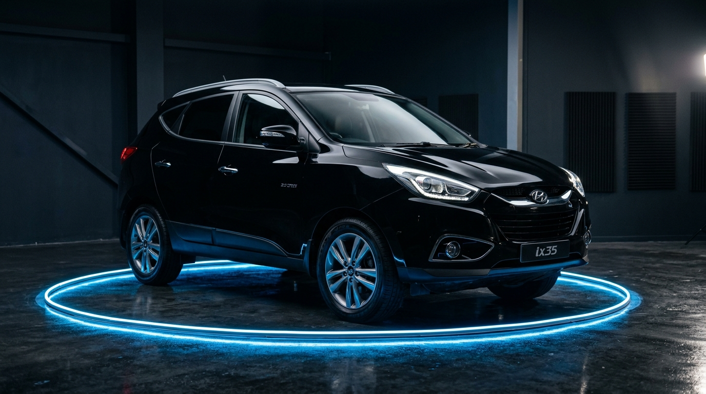

JH LAUNCHER · Hyundai Tucson ix35 2013
(1024 × 600 px)
⛶ Pantalla Completa
🎨 Tucson: Negro
🌙 Modo Stealth
07:56
DOMINGO, 25 DE OCTUBRE
I'm Sorry — Aventura
Toca cualquier parte para despertar la pantalla
HYUNDAI
TUCSON ix35 · 2013
07:56
DOMINGO, 25 DE OCTUBRE
USB 1
USB 2
BIENVENIDO AL MANDO
Hola, Hernan
Negro
Gris Acero

360° ACTIVO
CPU
22%
RAM (1.1 / 2 GB)
54%
ALMACENAMIENTO
38%
JH MUSIC (USB)
BLUETOOTH AUDIO
MI MIX (109)
USB 1
I'm Sorry
Aventura · The Last
02:14 / 04:36
ABRIR JH MUSIC
Ver carpetas y listas de reproducción
JH VIDEO
Videos USB offline
ABRIR VIDEOS
RADIO FM
Antena de fábrica
96.1
MHz
🚀
Abriendo JH Music...